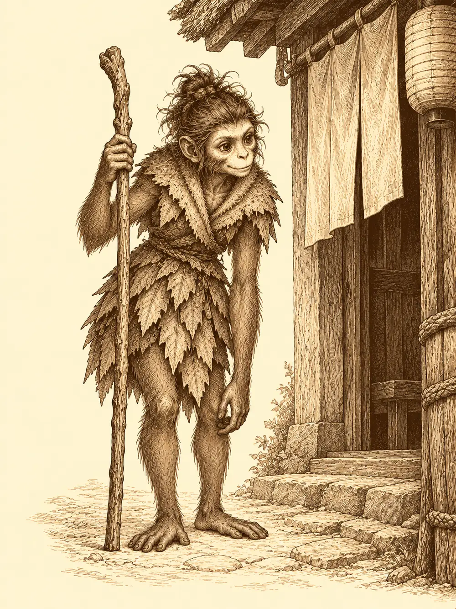

Capítulo 34
La feria de Ukio
Libro III · La boda del shogun
El cachorro estornudó y una lengua de fuego del tamaño de una mano chamuscó el borde de la estera. Erk lo levantó por debajo de las patas delanteras, lo miró a los ojos con toda la severidad que cabe en una cara de lechuza y le explicó, por enésima vez aquella mañana, que dentro de casa no se escupían llamas. El pequeño zorro movió las orejas. Se llamaba Koi, y llevaba una semana en la base de los cazadores aprendiendo a obedecer a alguien con plumas que no era su madre.
Erk había escrito a la costurera de Sho que la vistió para la boda del shogun, proponiéndole un negocio a medias, y la carta seguía sin respuesta. En el rincón del fondo, el gato gigante dormía con la barriga al aire y el bebé dormía también. Sirth intentaba ordenar un fajo de papeles en la mesa grande con la paciencia de quien sabe que la va a perder.
Sun Gukon estaba sentado en el suelo con las piernas cruzadas y una caja pequeña de madera entre las manos, con grabados en la tapa y remaches de metal en las esquinas. Llevaba días adecentando el viejo templo del Rey Mono, en la montaña, y la gente de los alrededores había empezado a subir con comida, con ofrendas o solo a escucharlo. Aquella mañana no hablaba del templo. Murmuraba solo, levantaba la vista al techo y volvía a la caja.
"¿Qué es eso?", le preguntó Shizuka.
"Una cosa muy importante. Tengo que reunir valor para dársela a alguien".
La niña se rindió con un bufido y fue a buscar a Maroxi. Le dio unos golpecitos en el hombro, tac, tac, tac, hasta que el cambiante se volvió.
"¿Quieres ver lo que sé hacer?".
Se sacó por la cabeza la armadura de cuero, con tanta torpeza que casi se cae, la dejó en el suelo, movió las manos delante del pecho y se tocó el esternón con dos dedos. Una película de luz se cerró a su alrededor, tenue y firme, como el agua de un estanque cuando se hiela.
"Como tú", dijo, orgullosa.
Maroxi, pálido, de rasgos que parecían a medio decidir y ojos de no haber dormido bien, le preguntó quién le había enseñado aquello. Ella contestó que él, aunque no se hubiera dado cuenta: ella miraba a la gente y aprendía cosas. También había mirado al inugami de la base, y una vez lo vio hacer que una tortuga corriera muchísimo y que un lobo se quedara lentísimo.
Maroxi se transformó en ella. De pronto hubo dos niñas idénticas en mitad de la sala, con la misma voz chillona y las mismas preguntas atropelladas, y Shizuka se rio hasta quedarse sin aire.
Sirth dejó el pincel sobre la mesa.
"¿Podéis salir a jugar fuera, por favor? Tengo que repasar unos papeles para el shogun y son las once de la mañana". Suspiró. "Monos, a por ellas".
Maroxi se convirtió en mono en el acto y se perdió entre la tropa de Sun. Shizuka los fue mirando de cerca uno por uno, preguntando cuál era él, y no lo encontró. Para entonces Sun ya se había escabullido hacia la taberna con su caja.
Fue derecho a la mesa donde bebían Zia y Bill, saludó con una prisa que lo delataba y pidió hablar a solas con la tabaxi. Ella se sentó un poco apartada, guardando la distancia. Sun dejó la caja a su alcance.
"Antes de que la abras tengo que contarte una historia. Te prometo que no te quitaré mucho tiempo".
Le costaba ponerse serio; se le notaba en la manera de tragar saliva. Contó que en un monte no muy lejos vivía una tribu de monos que nunca bajaba al valle, y que una mañana apareció junto a la aldea una roca que nadie había visto antes, con una cría abandonada al pie. La criaron como a uno más. El pequeño creció más valiente y más curioso que los otros, se metía en líos, y no terminaban de quererlo, así que se propuso ser su rey y lo consiguió. No le bastó. Salió a enfrentarse con espíritus y demonios, y algunos dioses, molestos de que un simple mono se hiciera tan famoso, le pusieron pruebas que fue superando una tras otra.
"Y en eso sigue. Trabajando para que los mismos dioses lo reconozcan".
Zia había dejado de mirarlo hacia la mitad.
"¿Y qué me quieres decir con todo esto?".
"Unos ancianos que suben mucho al templo me contaron que en su aldea, para conquistar a alguien, se le regalaban dos cosas: una historia que nadie más conociera y una flor de loto cultivada con las propias manos". Empujó la caja hacia ella.
Zia la apartó sin abrirla.
"A mí me gusta otro. Ya no sé cómo decírtelo".
Sun dijo que había tenido que hacer un último intento, que le deseaba que le fuera bien con él. Recogió la caja y se despidió de la mesa con una sonrisa que no le llegaba a los ojos. Al cerrar la puerta de la taberna tras de sí se le saltaron las lágrimas.
Maroxi había subido al templo del pueblo, donde el curandero atendía al kitsune adulto que él mismo había llevado allí en brazos, corriendo, desde la cueva.
"Lo tengo en cuidados, pero está muy grave. No sé si podremos salvarlo".
Maroxi se ofreció a buscar hierbas, a pedir ayuda a Asami, la especialista recién llegada. El curandero le pasó un brazo por los hombros.
"Amigo mío, hemos hecho cuanto podíamos. Lo único que queda es esperar que los dioses nos ayuden. Por lo menos sigue estable. No ha empeorado".
Al salir, la dueña del burdel lo vio con los ojos vidriosos. Era pequeña, y aun así le tomó la cabeza con las dos manos y se la bajó hasta el pecho para que llorase cuanto quisiera. Él le contó que el zorro le recordaba a su infancia. Ella lo invitó a probar suerte en sus mesas a cuenta de la casa, le dijo que con lo ganado al menos cenaría bien y que podía llamarla a cualquier hora.
Para Erk no había duda: el kitsune que dormía en el templo era la madre de Koi.
Sun seguía llorando junto a la taberna cuando levantó la cabeza y encontró a alguien delante: una mona pequeña de brazos largos, vestida con pieles y ropajes cosidos de hojas, apoyada en un palo.
"Hola. ¿Tú eres de los cazadores?".
A Sun se le secaron las lágrimas de golpe. Dijo que sí, que se llamaba Sun Gukon. Ella le tendió la mano y, como él se había quedado mirándola sin moverse, le tomó el brazo y se la estrechó ella misma.
"Encantada. Soy Lealín. Soy cazadora también".
Buscaba a una tal Kimiko, que según le habían dicho daba trabajo a los cazadores. Sun se ofreció a llevarla y, antes de que terminara la frase, Lealín ya lo arrastraba calle arriba de la mano. Maroxi, que bajaba del templo, los vio pasar y no tuvo ánimo ni para una broma.
Kimiko levantó la vista del registro.
"Ahora dos monos. ¿Traes carta de recomendación?".
La traía, de Hakara. La mercenaria la leyó y anotó lo que Lealín le contaba de sí misma: a qué raza pertenecía, que dominaba el arte de la naturaleza y que podía convertirse en distintos animales.
"¿Y tú a qué has venido?", le preguntó a Sun.
"A acompañarla. Como buen líder de los cazadores de Ukio, me he visto en la obligación".
"No eres el líder". Y siguió escribiendo.

Lealín no le soltó la mano. Cuando terminó el registro dijo que, ya que estaba apuntada, podían ir a tomar algo, y se lo llevó otra vez.
A media tarde la calle del norte se llenó de ruedas, trompetas y tambores. Un carromato pintado como para un carnaval se detuvo frente a la taberna y de él bajó Sota, el presentador de los torneos, con una banda de músicos a la espalda.
"¡Señoras y señores de Ukio! ¡Ha llegado por fin la feria! Esta noche, aquí detrás, grandes juegos, grandes recompensas y diversión para todos".
Shizuka se quedó clavada en el sitio con los ojos tan abiertos que parecían dolerle. Luego saltó sobre Sun, le agarró la cara con las dos manos, le gritó "¡feria!" a dos dedos de la nariz y siguió gritándolo puerta por puerta. Guxi, que volvía de la capital con la ropa arrugada de funcionario, apenas había pedido sake cuando la niña le informó de que iban a ir y de que no era negociable.
Maroxi, entretanto, buscó al inugami en la base y le pidió que tomara su otra forma. Una luz azulada lo envolvió y de ella salió el yokai grande, con su kimono y sus espadas al cinto. El cambiante le explicó que podía imitar a casi cualquier persona, pero que las colas, los cuernos y los tamaños pequeños se le resistían.
"Yo solo tengo dos formas, muchacho. La de yokai y la de animal". Lo examinó despacio. "Te falta experiencia, pero tienes magia. Podríamos entrenar por las noches".
Maroxi aceptó, y le preguntó por la espada de cristal hecha para quienes dominan el canto de la espada. El inugami se tocó el hocico. Algo le sonaba, una espada o una daga, no recordaba bien: una historia de Hakara, al norte, tan vieja y tan repetida que nadie sabía si era cierta. Allí podría preguntar. Mejor ir por mar que a través del bosque.
Sun, por su parte, se acordó al ir a pagar una ronda de que llevaba encima las escamas del dragón y bajó a la herrería antes de que Hitoshi cerrase.
"Esto es de un dragón joven", dijo el herrero.
"Hazme algo con ellas. Una armadura no, que no me deja moverme. Unos brazaletes, una hombrera. Si me quedo quieto me da algo".
Hitoshi prometió estudiarlo, se guardó las escamas y apagó la forja deprisa, porque él también iba a la feria.
Al caer la tarde, Sun le preguntó a Lealín, con muchos rodeos, si querría acompañarlos para conocer a los compañeros y demás.
"Claro", contestó ella, y tiró de él. "Hablas un montón, ¿lo sabías? Podrías ir al grano".
Maroxi no apareció. Iba detrás de Guxi, invisible, con las manos metidas en los bolsillos del artífice: munición, pociones, un libro de yokai y una carpeta de papeles del shogun. Uno llevaba la firma del gobernante, clara y bien trazada. La estudió, la memorizó y devolvió el papel a su sitio. Erk, mientras, pasó otra vez por el templo, ofreció pociones y oro, oyó lo mismo que había oído Maroxi y dejó unas monedas para los cuidados, pidiendo noticias en cuanto las hubiera.
La feria estaba a veinte pasos de las últimas casas, en un campo lleno de farolillos, puestos que olían a carne asada y a azúcar quemado, músicos en un escenario y vecinos que iban de un lado a otro con una hoja en la mano. Sota les dio una a cada uno, también a Shizuka: en ella se apuntaban las victorias, y al final de la noche quien más tuviera elegiría recompensa.
En los anillos ganó Erk, que no se inmutó cuando alguien intentó asustarla en pleno tiro. En la carrera de sacos el suyo se rompió por abajo antes del primer salto, Maroxi y Shizuka acabaron enredados y muertos de risa en el suelo, una patata cruzó el aire hacia Sun, que la esquivó sin perder el paso, y al final el mono concentró su fuerza interior en las piernas y cruzó la meta de tres brincos. En el tiro con arco ganó Shizuka, por delante de todos los adultos, y se pasó un buen rato corriendo entre los puestos y gritando que era la mejor con el arco.
Entre la gente había caras conocidas: Zia lanzando anillos, Kitaro y Haru detrás de las parrillas. En el concurso de comida Maroxi comió como si las penas del día le hubieran abierto un pozo en el estómago y ganó, aunque Guxi, que empezó despacio, exigió más platos hasta arrancarle a Sota otro punto. Shizuka probó algo verde, lo escupió y se marchó de la mesa. En la cuerda, Erk abrió las alas sin disimulo y subió de un impulso; en el desempate volvió a hacerlo y nadie logró demostrar que fuera trampa. En el martillo, Sun abrió en la roca la grieta más honda. Lealín participó en todo, no ganó nada y se divirtió más que nadie.
Quedaban los cuentacuentos. El público se sentaba en el suelo, con música suave de fondo. Sun repitió la historia del mono nacido junto a la roca y Lealín aplaudió por todos. Después se sentó Maroxi. Contó una historia de gigantes y, mientras la contaba, su cuerpo crecía y le asomaban colmillos en los pasajes de la batalla, y en los momentos tristes se le arrugaba la piel y se le llenaban los ojos de lágrimas como a una anciana. Cuando terminó, la gente se quedó un instante en silencio antes de aplaudir. Lealín le dio un codazo a Sun.
"Espectacular, ¿eh?".
Aquello dejaba a Erk, a Sun y a Maroxi con dos victorias cada uno.
Sota explicó que siempre había habido un solo héroe de la feria. Los tres protestaron y la gente coreó con ellos, hasta que el presentador, tras consultarlo con los organizadores, los declaró vencedores a los tres: cincuenta monedas para cada uno y un único premio principal que tendrían que compartir. Lo eligieron de entre tres: una llave que flotaba girando sobre la mesa y abría cualquier cerradura una vez al día, una bolsa pequeña atada con un lazo de la que la comida no se acababa nunca y una caja.
"La caja", dijo Shizuka. "La caja, la caja".
Mientras los demás entretenían a Sota, Guxi examinó la caja y averiguó que era una caja de bromas mágica. Después se irguió y preguntó, con toda la autoridad de un enviado del shogun, si la feria tenía sus permisos en regla.
"Tenemos los papeles", contestó Sota. "Creo que están en la caravana. Si me disculpa un momento".
Se alejó. Los samuráis que custodiaban el recinto se fueron retirando también, sin prisa, hasta quedar ocultos tras los árboles. Ninguno volvió.
"Este tinglado no es muy legal", dijo Guxi en voz baja. "Podéis coger lo que queráis".
Desde los setos llegó el rugido del gato gigante de la base, tan real que media feria se volvió a mirar. No había ningún gato. Cuando la gente dio la vuelta, la llave ya no estaba y Maroxi silbaba con las manos a la espalda. Sun se puso la caja bajo el brazo y siguió andando. Erk tomó la bolsa, se cargó a Shizuka a la espalda y se elevó por encima de los farolillos.
Allá arriba, la niña ya había metido la mano en la bolsa. Sacó un trozo de su comida favorita, todavía caliente, y se lo comió. Volvió a meter la mano y sacó otro igual.
"¡Siempre me da lo mismo! ¡Y es lo que más me gusta!".
Erk le quitó la bolsa antes de que sembrara de migas todos los tejados de Ukio. Volvieron a la base a paso ligero, mirando de vez en cuando hacia atrás, con tres premios donde les correspondía uno. En el templo, la madre de Koi seguía sin despertar.